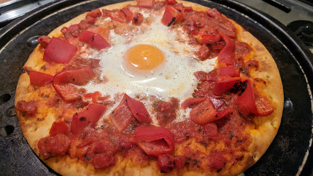

Pepper and egg pizza
Ingredients
- 150 g red and yellow peppers in oil
- 8 tbsp passata
- 4 small wheat-free pizza bases
- 4 medium eggs
- 125 g watercress, washed and stalks removed
Instructions
- Preheat the oven to 200°C/Gas 7 and preheat two large baking sheets, big enough to hold two pizzas each.
- Drain the peppers, reserving the oil. Chop into thin strips. Spoon 2 tbsp passata over each pizza base and scatter the strips of the chopped pepper around the edges. Make a dip in the passata in the middle of each pizza and break an egg into it. Carefully slide the pizzas on to the preheated baking sheets. Place in the oven and cook for 12 minutes until the egg is thoroughly cooked.
- Top the pizzas with the watercress, drizzle with a little of the reserved oil from the peppers and serve.